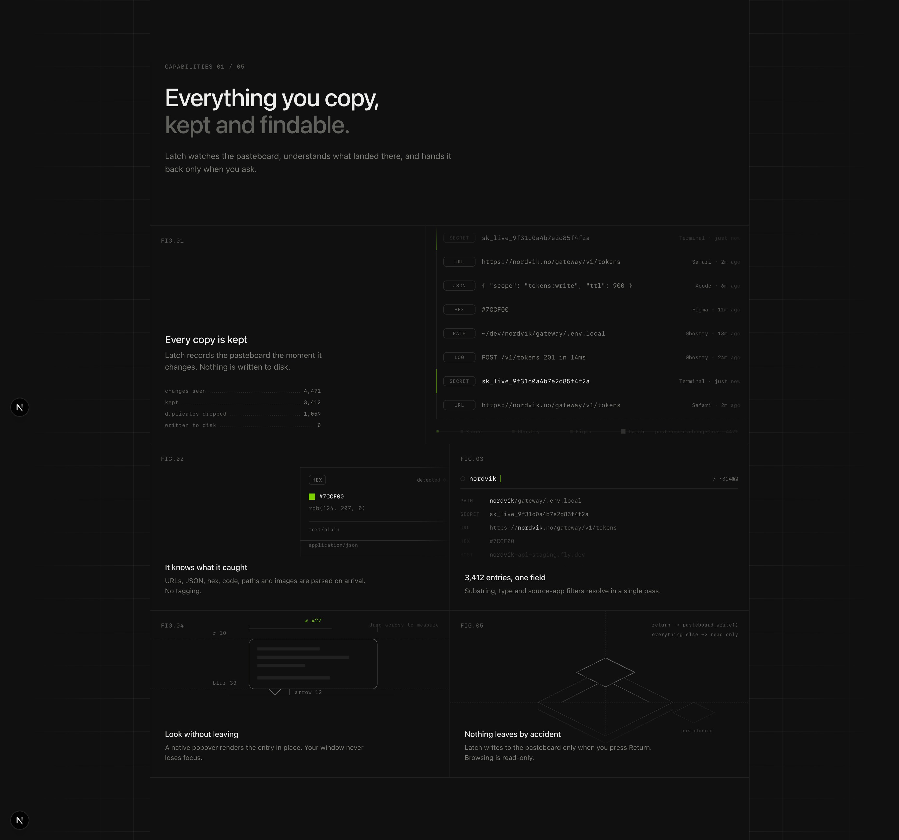

An agent skill · 51 references · reverse-engineered frame by frame
Give your coding agent
a trained eye.
Drawn To replaces “make it look good” with a locked design direction: a measured taste library, a short interview you answer with weights instead of forced picks, and a lock file every visual decision must serve. Then it builds.
01 — Proof
Same model. Same brief. One variable.
Two agents, the same model, the same five-feature brief, the same empty folder. The left one had a well-engineered skill with an empty knowledge layer. The right one had this library.

02 — How it works
Six steps. One lock file.
It reads your repo before it asks anything, proposes weighted directions instead of a single pick, and writes every decision down as it happens.
Discover
Reads tokens, docs, product truth. Infrastructure is adopted; the current look is a question, never an assumption. You never explain what the repo already says.
Brief
“Here is what I found — correct?” Then only the gaps: the real feature list, the data domain, the language of the copy.
Blend
Two or three directions from the eight families, answered with weights — 70 / 20 / 10. Clashes are warned about and resolved, not re-asked.
Lock
One plain-language question per open axis — corners, separation, accent, motion budget — with anchors you know. Firmness recorded per lock.
Variants
Two or three compositions per section from 31 recipes; for feature work, 2–4 illustration concepts per feature across metaphor registers.
Build
Every visual change serves a named lock. Motion follows the craft doctrine. Revisions never erase — the ledger is history.
A question, as you hear it
3 of ~8 — How should surfaces separate?
Answer with weights if you like several: “70% A + 30% C — A for the cards, C for the hero.”
What it writes down
| # | Axis | Locked | Firmness | |-----|------------|-----------------------------------------|-----------| | Q1 | Blend | 65% Editorial + 15% Blueprint + … | must-have | | Q2 | Separation | 1px alpha dividers, no fills | must-have | | Q3 | Radius | sharp 0 — radius only on buttons | must-have | | QI4 | popover | redline plate, pointer-scrubbable 1:1| must-have | | R1 | Q4 motion | revised (AGENTS.md caps UI at 300ms) | — |
03 — The library
Measured, not described.
Every claim carries a reference slug and a number. The constants held across the whole corpus — the skill enforces them and never asks about them.
Eight families — what you blend
Each has measured grounds, separation physics, radius family, texture, graphic device, motion register and a “choose when”. Proven pairings and documented clashes ship with them.
Editorial Monochrome
Dark, divider-cut, type does the work.
14 refs · Linear · Vercel · AttioInk & Air
Airy light editorial, charcoal ink, one accent.
10 refs · Stripe · Vercel lightStaged Atmosphere
One chroma asset carries the mood; UI stays gray.
15 refs · Raycast · ReflectBlueprint Sheet
Drafting-table ornament: grid, FIG labels, redlines.
9 refs · Prime Intellect · interfaces.devPaper & Print
Halftone, crop marks, paper grain, white mats.
5 refs · studio brand boardsSoft Pastel Stage
Pastel fields, squircles, one soft shadow.
6 refs · Amie · LumaTactile Instruments
Components as hardware: dials, wheels, 1:1 drag.
8 refs · Rauno · Emil demosEmissive Signal
Near-dark; light is the accent, bloom at the action.
8 refs · Linear release films04 — Beyond direction
The interview locks what. Four references build it well.
A concept per feature, not an icon
The feature’s verb picks the metaphor — instrument, mechanism, product fragment, blueprint plate, isometric object, light. 2–4 concepts each, with construction recipes.
The pinned product scene
Poses as registered custom properties, one keyframe track, scroll / keyboard / static drivers, svh mobile math, a fallback ladder where every rung is composed.
Doctrine, then recipes
The animate-at-all gate, the curve trio, springs with velocity handoff, interruptibility, clip-path tricks, a never-ship list — and 14 paste-ready component animations.

05 — Install
Stop describing taste. Hand it the eye.
Claude Code · Codex · Cursor · Copilot · Gemini · anything that reads SKILL.md · MIT